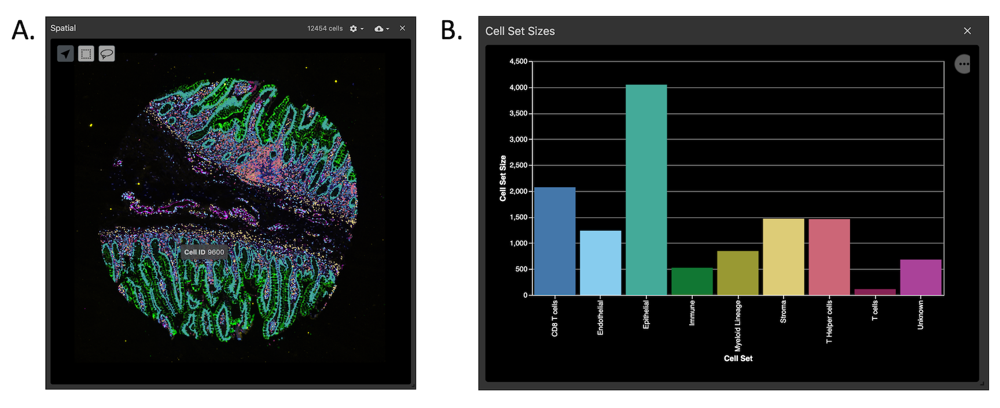

Multiplex tissue images are large, multi-channel images that contain intensity data for numerous biomarkers. The methods for generating multiplex tissue images are diverse, and each method can require specialized knowledge for downstream processing and analysis. The MCMICRO (Schapiro et al. 2021) pipeline was developed to process multiplex images into single-cell data, and to have the range of tools to accomodate for different imaging methods. The tools used in the MCMICRO pipeline, in addition to tools for single-cell analysis, spatial analysis, and interactive visualization are available in Galaxy to facilitate comprehensive and accessible analyses of multiplex tissue images. The MCMICRO tools available in Galaxy are capable of processing Whole Slide Images (WSI) and Tissue Microarrays (TMA). WSIs are images in which a tissue section from a single sample occupies the entire microscope slide; whereas, TMAs multiplex smaller cores from multiple samples onto a single slide. This tutorial will demonstrate how to use the Galaxy multiplex imaging tools to process and analyze publicly available TMA test data provided by MCMICRO (Figure 1.).
Figure 1: Fully registered image of the MCMICRO Exemplar-002 Tissue microarray. Exemplar-002 consists of four cores, each with a distinct tissue organization and expression of biomarkers. In the image, there are six biomarkers shown: DNA (white), CD163 (yellow), CD3D (blue), CD31 (red), VDAC1 (green), and Keratin (orange). This image is being viewed using Avivator, an interactive tool that allows the user to selectively view channels and adjust channel intensities.
Multiplex tissue images come in a variety of forms and file-types depending on the modality or platform used. For this tutorial, the Exemplar-002 data was imaged using Cyclic Immunofluorescence (CycIF) with a RareCyte slide scanner. Many of the steps in this workflow have platform-specific parameters, and the hands-on sections will show the best parameters for CycIF RareCyte images; however, notes will be made where critical differences may occur depending on the modality or platform throughout the tutorial.
Hands-on: Data import to history
Create a new history for this tutorial
To create a new history simply click the new-history icon at the top of the history panel:
Import the files from Zenodo or from
the shared data library (GTN - Material -> imaging
-> End-to-End Tissue Microarray Image Analysis with Galaxy-ME):
Click galaxy-uploadUpload Data at the top of the tool panel
Select galaxy-wf-editPaste/Fetch Data
Paste the link(s) into the text field
Press Start
Close the window
Group the datasets into collections. Make a collection of the OME-TIFF, ordering the files by cycle number.
Warning: **Imaging platform differences**
The Exemplar-002 raw images are in ome.tiff format; however, commonly seen raw file-types are ome.tiff, tiff, czi, and svs. If your input images are not ome.tiff or tiff, you may have to edit the dataset attributes in Galaxy to allow tools to recognize them as viable inputs.
The raw files for each round (10 in total) of the exemplar-002 data are available on cancer.usegalaxy.org under Data Libraries (Figure 2.). Import the raw files into a new history as a list collection.
Figure 2: Finding the Exemplar-002 data on cancer.usegalaxy.org Data Libraries.
Tile illumination correction with BaSiC Illumination
Commonly, raw MTI data will consist of one image per round of imaging. These individual round images are frequently captured in tiles, and there can be slight variations in how each tile was illuminated across the course of imaging. Prior to tile stitching and image registration, the tiles have to undergo illumination correction with BaSiC Illumination (Peng et al. 2017) to account for this. Unlike many of the other tools in this workflow, BaSiC has no extra parameters to think about: Just input the collection of raw images and press go!
Two new list collections will appear in the history upon completion:
BaSiC Illumination on Collection X: FFP (flat-field)
BaSiC Illumination on Collection X: DFP (deep-field)
Hands-on: Illumination correction
BaSiC Illumination ( Galaxy version 1.0.3+galaxy1) with the following parameters:
param-collection“Raw Cycle Images: “: List collection of raw images
Stitching and registration with ASHLAR
After illumination is corrected across round tiles, the tiles must be stitched together, and subsequently, each round mosaic must be registered together into a single pyramidal OME-TIFF file. ASHLAR (Muhlich et al. 2022) from MCMICRO provides both of these functions.
Comment: Important detail: Marker File
ASHLAR optionally reads a marker metadata file to name the channels in the output OME-TIFF image. This marker file will also be used in later steps. Make sure that the marker file is comma-separated and has the marker_names as the third column (Figure 3.).
Figure 3: Markers file, used both in ASHLAR and downstream steps. Critically, the marker_names are in the third column.
Hands-on: : Image stitching and registration
ASHLAR ( Galaxy version 1.14.0+galaxy1) with the following parameters:
param-collection“Raw Images”: List collection of raw images
param-collection“Deep Field Profile Images”: List collection of DFP images produced by BaSiC Illumination
param-collection“Flat Field Profile Images”: List collection of FFP images produced by BaSiC Illumination
param-file“Markers File (optional)”: Comma-separated markers file with marker_names in third column
In “Advanced Options”:
“Write output as a single pyramidal TIFF”: Yes
Warning: **Imaging platform differences**
ASHLAR, among other tools in the MCMICRO and Galaxy-ME pre-processing tools have some parameters that are specific to the
imaging patform used. By default, ASHLAR is oriented to work with images from RareCyte scanners. AxioScan scanners render images
in a different orientation. Because of this, when using ASHLAR on AxioScan images, it is important to select the Flip Y-Axis
parameter to Yes
ASHLAR will work for most imaging modalities; however, certain modalities require different tools to be registered. For example,
multiplex immunohistochemistry (mIHC) images must use an aligner that registers each moving image to a reference Hematoxylin image.
For this, Galaxy-ME includes the alternative registration tool PALOM.
TMA dearray with UNetCoreograph
Many downstream processing and analysis steps require each individual core from the TMA to be in a separate image file. To accomplish this from our registered ome.tiff image, we can use UNetCoreograph to detect and crop each core into separate files.
UNetCoreograph will output images (used for downstream steps), masks, and a preview image (Figure 4.).
Figure 4: Preview image from UNetCoreograph, outlines show detection of each individual core in the TMA.
Hands-on: TMA dearray
UNetCoreograph ( Galaxy version 2.2.8+galaxy1) with the following parameters:
param-file“Registered TIFF”: The output of ASHLAR (registered, pyramidal OME-TIFF file)
Comment: What about Whole Slide Images?
Whole slide images do not need to be dearrayed, so in most cases, this step can be skipped; however, UNetCoreograph has the “Tissue” option, which when selected, can act to separate the whole tissue from the background in a whole slide image which can be useful. In this case, it is important to toggle the “Downsample factor” as this often needs to be higher when extracting whole tissues.
Nuclear segmentation with Mesmer
Cell segmentation is the basis for all downstream single-cell analyses. Different segmentation tools work highly variably depending on the imaging modality or platform used. Because of this, Galaxy-ME has incorporated several cell segmentation tools so users may find the tool that works optimally for their data.
In this tutorial, we use Mesmer because it tends to perform generally well on a diverse range of image types, and has a limited number of parameters to understand.
Comment: Important detail: Running images in batches
Now that each image has been split into individual core images, downstream tools must be run on the images separately. Luckily, Galaxy makes this easy by including the option to run each tool in batch across a collection of inputs. Next to the input for the tool, select param-collection (Dataset collection) as the input type, and pass the collection output by UNetCoreograph as input.
Hands-on: Nuclear segmentation
Mesmer ( Galaxy version 0.12.3+galaxy2) with the following parameters:
param-collection“Image containing the nuclear marker(s) “: Collection output of UNetCoreograph (images)
“Resolution of the image in microns-per-pixel”: 0.65
“Compartment for segmentation prediction:”: Nuclear
Comment: np.squeeze
The np.squeeze parameter is very important to select as Yes to make the output compatible with next steps
A crucial parameter for Mesmer and other segmentation tools is the Image resolution. This is reported in microns/pixel, and can vary depending on the imaging platform used and the settings at image acquisition. Mesmer accepts the resolution in microns/pixel; however, if using UnMICST, the resolution must be reported as a ratio of the resolution of UnMICST’s training images (0.65). For example, when using UnMICST, if your images were captured at a resolution of 0.65, then the UnMICST value would be 1, but if your images were captured at 0.325 microns/pixel, then the value you would enter for UnMICST would be 0.5.
Calculate single-cell features with Quantification
After generating a segmentation mask, the mask and the original registered image can be used to extract mean intensities for each marker in the panel, spatial coordinates, and morphological features for every cell. This step is performed by MCMICRO’s Quantification module.
Once again, as this is a TMA, we will be running this in batch mode for every core image and its segmentation mask.
The quantification step will produce a CSV cell feature table for every image in the batch.
Hands-on: Quantification
Quantification ( Galaxy version 1.5.3+galaxy1) with the following parameters:
param-collection“Registered TIFF “: Collection output of UNetCoreograph (images)
param-collection“Primary Cell Mask “: Collection output of Mesmer (or other segmentation tool)
param-collection“Additional Cell Masks “: Nothing Selected (Other tools may produce multiple mask types)
param-file“Marker channels”: Comma-separated markers file with marker_names in third column
Comment: Mask metrics and Intensity metrics
Leaving the “mask metrics” and “intensity metrics” blank will by default run all available metrics
Convert McMicro Output to Anndata
Anndata (Virshup et al. 2021) is a Python package and file format schema for working with annotated data matrices that has gained popularity in the single-cell analysis community. Many downstream analysis tools, including Scimap from MCMICRO, Scanpy (Wolf et al. 2018), and Squidpy (Palla et al. 2022) are built around anndata format files (h5ad). This tool splits the marker intensity data into a separate dataframe (X), and places all observational data (spatial coordinates, morphological features, etc.) in the cell feature table into a separate dataframe (obs) that shares the same indices as X. In downstream analyses, new categorical variables, such as phenotype assignments for each cell, are stored in the obs dataframe.
Convert McMicro Output to Anndata ( Galaxy version 0.17.7+galaxy0) with the following parameters:
param-collection“Select the input image or images”: Collection output of Quantification (cellMaskQuant)
In “Advanced Options”:
“Whether to remove the DNA channels from the final output”: No
“Whether to use unique name for cells/rows”: No
Warning: Important parameter: Unique names for cells/rows
Setting “Whether to use unique name for cells/rows” to No to ensures that downstream interactive visualizations will be able to map observational features to the mask CellIDs.
Scimap: Single Cell Phenotyping
There are several ways to classify cells available in Galaxy-ME. Unsupervised approaches, such as Leiden clustering, can be performed on all cells and phenotypes can be manually annotated based on marker expression patterns observed by the user. This approach is time consuming, so here we will demonstrate automated phenotyping based on thresholds of specific lineage markers using MCMICRO’s Scimap. Scimap phenotyping can either be provided a table of manual gate values for each marker of interest (which can be determined using the GateFinder tool in Galaxy-ME), or by default, Scimap will fit a Gaussian Mixture Model (GMM) to the log(intensity) data for each marker to determine positive and negative populations for that marker. The marker intensity values are rescaled between (0,1) with 0.5 being the cut-off between negative and positive populations. Scimap uses a ‘Phenotype workflow’ to guide the classification of cells (Figure 5.). For more on how to construct a Scimap workflow, see the Scimap documentation.
Figure 5: Example of a phenotype workflow compatible with Scimap. 'Pos' means that the marker must be positive to be classified as the respective phenotype. 'Anypos' means any, but not necessarily all, of the listed markers can be positive to call the respective phenotype.
Hands-on: Single Cell Phenotyping with Scimap
Single Cell Phenotyping ( Galaxy version 0.17.7+galaxy0) with the following parameters:
param-collection“Select the input anndata”: Output of Convert MCMICRO output to Anndata
param-file“Select the dataset containing manual gate information”: (Optional) manually determined gates in CSV format. Gates will be determined automatically using a GMM for each marker if this file is not provided
When manual gates are not provided, Scimap fits a GMM to determine a threshold between positive and negative cells. This automated gating works well when markers are highly abundant within the tissue, and the data shows a bimodal distribution (Figure 6A.). GMM gating can lead to spurious thresholds, however, when the data does not appear to be bimodal (Figure 6B.). This tends to happen when the marker is not highly abundant in the tissue, so there isn’t a large positive population. Markers that have a highly continuous range of intensity, like certain functional markers, can also be problematic with GMM gating. It is recommended to always look at the GMM plots output by Scimap, and validate any potentially spurious gates manually.
Figure 6: Scimap automatic gating GMMs for two markers. (A) An example of a marker with a bimodal distribution and a reasonable looking gate. (B) An example of a marker with a unimodal distribution that is not ideal for fitting with a GMM, and would be a candidate for manual validation and gating.
Interactive visualization of multiplex tissue images
Visual analysis is an important part of multiplex tissue imaging workflows. Galaxy-ME has several tools that make interactive visualization easy, and can be used at various stages of analysis.
Converting UNetCoreograph images to OME-TIFF using the Convert image tool
UNetCoreograph outputs each individual core image in tiff format. Interactive visualization tools, such as Vitessce and Avivator require the images to be in OME-TIFF format to be viewed. Galaxy-ME includes a conversion tool that can accomodate this, along with many other useful conversion functions.
Hands-on: Convert image
Convert image ( Galaxy version 6.7.0+galaxy0) with the following parameters:
Some tools can cause the channel names in an OME-TIFF image to be lost. To fix this, or to change the channel names to whatever the user prefers, the Rename OME-TIFF Channels tool can be invoked using a markers file similar to the one used in previous steps.
Hands-on: Rename channels
Rename OME-TIFF Channels ( Galaxy version 0.0.1+galaxy1) with the following parameters:
param-file“Input image in OME-tiff format”: Convert image
“Format of input image”: ome.tiff
param-file“Channel metadata CSV”: markers.csv, Comma-separated markers file with marker_names in third column
Initial visualization with Avivator
For any OME-TIFF image in a Galaxy-ME history, there will be an option to view the image using Avivator. This is a great way to perform an initial inspection of an image for QC purposes before continuing with downstream steps. The Avivator window can be launched by expanding the dataset information in the history panel and clicking the link (Figure 7.).
Figure 7: The highlighted link automatically appears for any OME-TIFF image (left) and, when clicked, launches an Avivator window to explore the image (right).
Hands-on: View Images with Avivator
Expand the dataset ASHLAR: OME-TIFF image to be viewed
Click on “display at Avivator”
Generating an interactive visualization dashboard with Vitessce
Vitessce is a powerful visualization tool that creates interactive dashboards (Figure 8.) to look at a multiplex OME-TIFF images in conjunction with data generated during analysis and stored in an anndata file. The segmentation mask can be overlaid onto the image to qualitatively assess the segmentation performance. The mask can then be colored with associated observational data (Figure 9A.), such as phenotype, with the same colors appearing in barplots (Figure 9B.), UMAP representations, heatmaps, and marker intensity violin plots for comrehensive data exploration.
Figure 8: A Full view of a vitesse dashboard for one core from Exemplar-002.Open image in new tab
Figure 9: Each window in the dashboard can be resized to view the components in more detail. A closer look at the phenotype-labeled mask overlaid on the actual image (A), and the phenotype barplot (B).
Hands-on: Vitessce visualization
Vitessce Visualization ( Galaxy version 1.0.4+galaxy0) with the following parameters:
param-collection“Select the OME Tiff image”: OME-TIFF image to be viewed (or collection of files to run in batch)
param-collection“Select masks for the OME Tiff image (Optional)”: Output of Mesmer (or other segmentation tool)
“Whether to do phenotyping”: Yes
“Select the anndata contaning phenotyping info”: Single Cell Phenotyping, an anndata file that includes includes cell phenotype annotations.
“Select an embedding algorithm for scatterplot”: UMAP
“Input phenotyping keys”: Multiple choices
“Select the key(s)”: phenotype
Next steps: Compositional and spatial analyses
Galaxy-ME includes additional tools from Scimap and tools from the Squidpy package (Palla et al. 2022) that can be used to perform a variety of downstream analyses. For example, once phenotypes have been assigned to individual cells, Squidpy has several methods for understanding the spatial organization of the tissue. Using Squidpy, a spatial neighborhood graph is first generated, from which the organization of specific phenotype groups and their interactions can be quantified.
Hands-on: Spatial analysis with Squidpy
Squidpy Graph and Plotting generate a spatial neighborhood graph with the following parameters:
param-collection“Select the input anndata”: Anndata file containing phenotype information (or other variable of interest)
“Select an analysis”: Spatial neighbors -- Create a graph from spatial coordinates
Squidpy Graph and Plotting compute and plot a neighborhood enrichment analysis with the following parameters:
param-collection“Select the input anndata”: Output of step 1 (anndata file with spatial neighborhood graph)
“Select an analysis”: nhood_enrichment -- Compute neighborhood enrichment by permutation test
“Key in anndata.AnnData.obs where clustering is stored”: phenotype
Comment: Neighborhood enrichment plot
Squidpy was used to calculate neighborhood enrichments for each phenotype in core 2 of exemplar 2 (Figure 10.). This shows which phenotypes co-locate most frequently within the tissue.
Figure 10: The output of Squidpy's neighborhood enrichment on core 2 from Exemplar-002.
Squidpy Graph and Plotting calculate Ripley’s L curves for each phenotype with the following parameters:
param-collection“Select the input anndata”: Output of step 1 (anndata file with spatial neighborhood graph)
“Select an analysis”: nhood_enrichment -- Compute neighborhood enrichment by permutation test
“Key in anndata.AnnData.obs where clustering is stored”: phenotype
In “Advanced Graph Options”:
“Which Ripley’s statistic to compute”: L
In “Plotting Options”:
“Ripley’s statistic to be plotted”: L
Comment: Ripley's L plot
Squidpy was used to calculate Ripley’s L curves for each phenotype in core 2 of exemplar 2 (Figure 11.). This shows the overall organization of each phenotype in the tissue. If the curve for a given phenotype lies above the light grey null line (Example: Epithelial cells in Figure 11.), the phenotype is statistically significantly clustered. If the curve lies on the null line (Example: Myeloid lineage in Figure 11.), it’s spatial distribution within the tissue is random. If the curve is underneath the null line (Example: T cells in Figure 11.), it’s spatial distribution is statistically significantly dispersed.
Figure 11: The output of Squidpy's Ripley's L curve on core 2 from Exemplar-002.
Conclusion
In this tutorial, we demonstrated a complete multiplex tissue imaging analysis workflow performed entirely in a web browser using Galaxy-ME. Using an example tissue microarray imaged with cylic immunofluoresence provided by MCMICRO, we…
Corrected illumination between imaging tiles
Stitched and registered input images to produce a single, pyramidal OME-TIFF image that is viewable in multiple built-in interactive viewing tools (Avivator, Vitessce)
Split the TMA into separate images for each core
Processed each core in parallel, beginning with nuclear segmentation
Quantified the mean marker intensities, morphological features, and spatial coordinates of each cell in each core
Converted the resulting tabular data to anndata format for convenient downstream anaylses and visualizations
Performed marker-based, automatically gated, phenotyping of cells
Prepared the dearrayed images and viewed them interactively in a dashboard combined with observational data
Further information, including links to documentation and original publications, regarding the tools, analysis techniques and the interpretation of results described in this tutorial can be found here.
References
Peng, T., K. Thorn, T. Schroeder, L. Wang, F. J. Theis et al., 2017 A BaSiC tool for background and shading correction of optical microscopy images. Nature Communications 8: 10.1038/ncomms14836
Wolf, F. A., P. Angerer, and F. J. Theis, 2018 SCANPY: large-scale single-cell gene expression data analysis. Genome Biology 19: 10.1186/s13059-017-1382-0
Berg, S., D. Kutra, T. Kroeger, C. N. Straehle, B. X. Kausler et al., 2019 ilastik: interactive machine learning for (bio)image analysis. Nature Methods 16: 1226–1232. 10.1038/s41592-019-0582-9
Stringer, C., T. Wang, M. Michaelos, and M. Pachitariu, 2020 Cellpose: a generalist algorithm for cellular segmentation. Nature Methods 18: 100–106. 10.1038/s41592-020-01018-x
Greenwald, N. F., G. Miller, E. Moen, A. Kong, A. Kagel et al., 2021 Whole-cell segmentation of tissue images with human-level performance using large-scale data annotation and deep learning. Nature Biotechnology 40: 555–565. 10.1038/s41587-021-01094-0
Schapiro, D., A. Sokolov, C. Yapp, Y.-A. Chen, J. L. Muhlich et al., 2021 MCMICRO: a scalable, modular image-processing pipeline for multiplexed tissue imaging. Nature Methods 19: 311–315. 10.1038/s41592-021-01308-y
Virshup, I., S. Rybakov, F. J. Theis, P. Angerer, and F. A. Wolf, 2021 anndata: Annotated data. 10.1101/2021.12.16.473007
Muhlich, J. L., Y.-A. Chen, C. Yapp, D. Russell, S. Santagata et al., 2022 Stitching and registering highly multiplexed whole-slide images of tissues and tumors using ASHLAR (A. Valencia, Ed.). Bioinformatics 38: 4613–4621. 10.1093/bioinformatics/btac544
Palla, G., H. Spitzer, M. Klein, D. Fischer, A. C. Schaar et al., 2022 Squidpy: a scalable framework for spatial omics analysis. Nature Methods 19: 171–178. 10.1038/s41592-021-01358-2
Yapp, C., E. Novikov, W.-D. Jang, T. Vallius, Y.-A. Chen et al., 2022 UnMICST: Deep learning with real augmentation for robust segmentation of highly multiplexed images of human tissues. Communications Biology 5: 10.1038/s42003-022-04076-3
Feedback
Did you use this material as an instructor? Feel free to give us feedback on how it went.
Did you use this material as a learner or student? Click the form below to leave feedback.
Hiltemann, Saskia, Rasche, Helena et al., 2023 Galaxy Training: A Powerful Framework for Teaching! PLOS Computational Biology 10.1371/journal.pcbi.1010752
Batut et al., 2018 Community-Driven Data Analysis Training for Biology Cell Systems 10.1016/j.cels.2018.05.012
@misc{imaging-multiplex-tissue-imaging-TMA,
author = "Cameron Watson and Allison Creason",
title = "End-to-End Tissue Microarray Image Analysis with Galaxy-ME (Galaxy Training Materials)",
year = "",
month = "",
day = ""
url = "\url{https://training.galaxyproject.org/training-material/topics/imaging/tutorials/multiplex-tissue-imaging-TMA/tutorial.html}",
note = "[Online; accessed TODAY]"
}
@article{Hiltemann_2023,
doi = {10.1371/journal.pcbi.1010752},
url = {https://doi.org/10.1371%2Fjournal.pcbi.1010752},
year = 2023,
month = {jan},
publisher = {Public Library of Science ({PLoS})},
volume = {19},
number = {1},
pages = {e1010752},
author = {Saskia Hiltemann and Helena Rasche and Simon Gladman and Hans-Rudolf Hotz and Delphine Larivi{\`{e}}re and Daniel Blankenberg and Pratik D. Jagtap and Thomas Wollmann and Anthony Bretaudeau and Nadia Gou{\'{e}} and Timothy J. Griffin and Coline Royaux and Yvan Le Bras and Subina Mehta and Anna Syme and Frederik Coppens and Bert Droesbeke and Nicola Soranzo and Wendi Bacon and Fotis Psomopoulos and Crist{\'{o}}bal Gallardo-Alba and John Davis and Melanie Christine Föll and Matthias Fahrner and Maria A. Doyle and Beatriz Serrano-Solano and Anne Claire Fouilloux and Peter van Heusden and Wolfgang Maier and Dave Clements and Florian Heyl and Björn Grüning and B{\'{e}}r{\'{e}}nice Batut and},
editor = {Francis Ouellette},
title = {Galaxy Training: A powerful framework for teaching!},
journal = {PLoS Comput Biol} Computational Biology}
}
Funding
These individuals or organisations provided funding support for the development of this resource
Congratulations on successfully completing this tutorial!
You can use Ephemeris's shed-tools install command to install the tools used in this tutorial.
Questions:

 Open image in new tab
Open image in new tabOpen image in new tab
 Open image in new tab
Open image in new tab Open image in new tab
Open image in new tabOpen image in new tab
 Open image in new tab
Open image in new tab